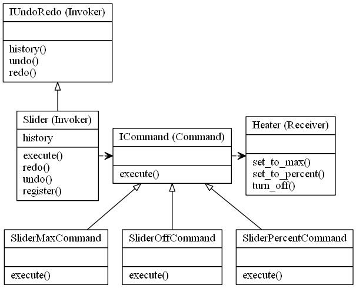

Command Design Pattern
The command pattern is a behavioural design pattern, in which an abstraction exists between an object that invokes a command, and the object that performs it.
The components if the Command Design Pattern are, 1. Receiver - The Object that will receive and execute the command 2. Invoker - Which will send the command to the receiver 3. Command Object - Itself, which implements an execute, or action method, and contains all required information to execute it 4. Client - The application or component which is aware of the Receiver, Invoker and Commands
Eg, a button, will call the Invoker, which will call a pre registered Commands execute method, which the Receiver will perform.
A Concrete Class will delegate a request to a command object, instead of implementing the request directly. Using a command design pattern allows you to separate concerns a little easier and to solve problems of the concerns independently of each of the layers. eg, logging the execution of a command and it's outcome.
Uses: GUI Buttons, menus Macro recording Multi level undo/redo networking - send whole command objects across a network, even as a batch parallel processing or thread pools, transactional behaviour Wizards
Notes: The receiver object should manages it's own state, not the command object There can be one or more invokers which can execute the command at a later date.
The Command Pattern in the context of a light switch

The Command Pattern in the context of a slider for a heater, which also implements UNDO/REDO
